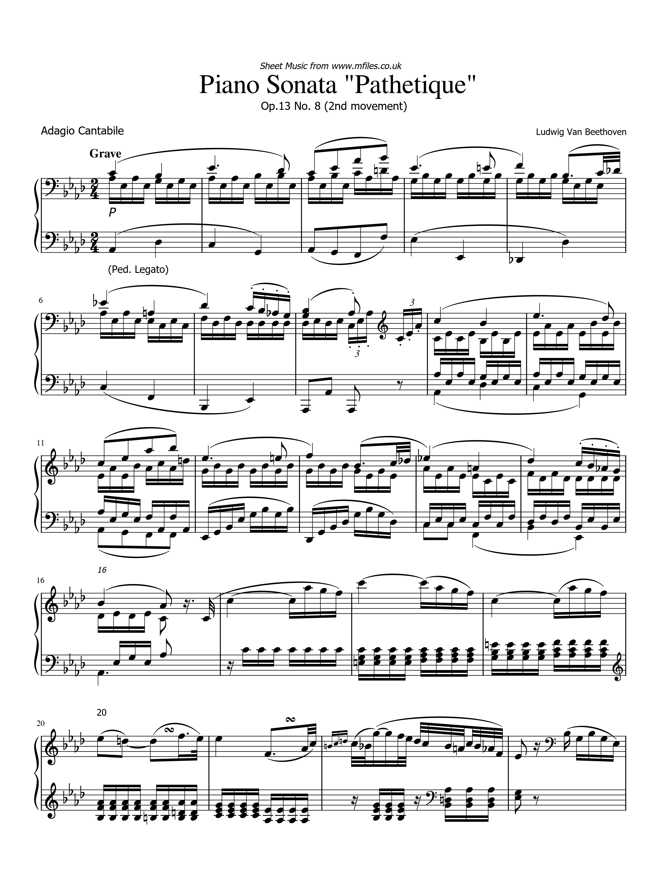

Task 1 - The Edited Score
Task 2 - Transcription Errors
Unfortunately it turned out that the original score I sourced for my project was too unreadable for the OMR engine, completely corrupting the score and only being able to transcribe a few notes here and there.
Because of this I decided to source another notated score of the piece that the musescore might actually be able to decifer, this time from mfiles.co.uk.
With this new score I was finally able to get a somewhat decent conversion from MuseScore, here are some examples of errors that I still had to correct while fixing the first page of the piece:
- It assumed a 120bpm which I had to substitute with a more appropriate "grave"
- It sometimes mistook crochets for quavers
- It frequently missed slurs between notes
- Stacatto indications were commonly missed
- Clef changes tended to be a few beats off
- It often got confused about the timesignature of a bar and would add extra beats that I had to correct